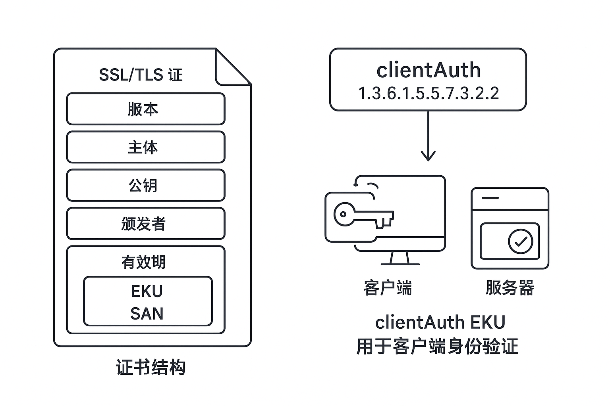

Ending TLS Client Authentication Certificate
Posted on Mon 18 August 2025 in Journal
| Abstract | Journal on 2025-08-18 |
|---|---|
| Authors | Walter Fan |
| Category | learning note |
| Status | v1.0 |
| Updated | 2025-08-18 |
| License | CC-BY-NC-ND 4.0 |
- 一、背景知识
- 1. SSL/TLS 证书与 HTTPS
- 2. 扩展密钥用法（EKU）
- 3. 客户端身份验证与 mTLS
- 二、为什么要停止支持 clientAuth EKU
- 1. 历史遗留问题
- 2. Chrome 与 DigiCert 的调整
- 三、证书结构与 clientAuth EKU 的作用
- 1. 证书主要结构
- 2. clientAuth EKU 的作用
- 四、安全隐患
- 五、总结与建议
- 10 English sentences to recite
近期，Google Chrome 宣布，自 2026 年 6 月 15 日起，将不再信任支持 客户端身份验证扩展密钥用法（clientAuth EKU） 的公共服务器证书（SSL/TLS 证书）。这个变化对于大多数网站和用户不会产生直接影响，但对使用 SSL 证书进行客户端身份验证的组织来说，需要提前做好调整。
一、背景知识
1. SSL/TLS 证书与 HTTPS
SSL/TLS 证书是互联网安全通信的基础，它通过加密和身份验证机制保证了 数据在传输过程中的机密性和完整性。在 HTTPS 协议中，服务器会向客户端提供证书，客户端通过验证证书的有效性来确认与服务器的连接是可信的。
2. 扩展密钥用法（EKU）
证书不仅包含公钥和持有者信息，还可以包含 扩展密钥用法（Extended Key Usage, EKU），用于明确证书可以执行的安全功能。例如：
- serverAuth：用于 HTTPS 服务器身份验证（最常用）。
- clientAuth：用于客户端身份验证，即客户端使用证书向服务器证明自己身份。
- 其他 EKU：代码签名、邮件保护等。
3. 客户端身份验证与 mTLS
客户端身份验证（clientAuth）常用于 双向 TLS（mTLS）。在 mTLS 中，除了服务器向客户端提供证书，客户端也需要提供证书给服务器，以实现双向信任。这种机制常用于企业内部系统或 API 服务中。

二、为什么要停止支持 clientAuth EKU
1. 历史遗留问题
在过去，一些公共 SSL/TLS 证书（由 DigiCert 等 CA 颁发）可以同时包含 serverAuth 和 clientAuth EKU。这意味着同一张证书既能用于服务器身份验证，也能用于客户端身份验证。
这种做法存在一定便利性，但也带来潜在风险：
- 滥用风险：客户端证书可能被不恰当地用于服务器身份验证。
- 互操作性问题：不同浏览器和操作系统对 clientAuth 的处理不一致。
- 安全攻击面增加：客户端证书泄露可能导致更严重的安全事件。
2. Chrome 与 DigiCert 的调整
为了 提升安全性和标准化互操作性：
- DigiCert 从 2025 年 10 月 1 日起，默认不再在公共 TLS 证书中包含 clientAuth EKU。
- Google Chrome 从 2026 年 6 月 15 日起，不再信任带有 clientAuth EKU 的公共服务器证书。
这意味着公共 CA 不再鼓励将公共服务器证书用于客户端身份验证。对于需要客户端认证的场景，应使用专门的内部 PKI 或私有 CA。
三、证书结构与 clientAuth EKU 的作用
1. 证书主要结构
一张 X.509 证书通常包含以下关键部分：
-
基本信息
-
证书版本、序列号、签名算法
-
主体信息（Subject）
-
持有者的名称、组织、域名等
-
公钥信息（Subject Public Key Info）
-
包含公钥及算法
-
颁发者信息（Issuer）
-
证书颁发机构 (CA) 的信息
- 有效期（Validity）
-
扩展字段（Extensions）
-
EKU（Extended Key Usage）
- SAN（Subject Alternative Name）：支持多域名
- Basic Constraints：是否是 CA 证书
- CRL 分发点、OCSP：用于证书撤销检查
2. clientAuth EKU 的作用
在扩展密钥用法中，clientAuth 对应的 OID 为 1.3.6.1.5.5.7.3.2。其主要作用是：
- 标识证书可用于客户端身份验证 当客户端在 mTLS 中提供证书时，服务器会检查证书是否包含 clientAuth EKU。
- 防止误用 如果证书缺少 clientAuth EKU，则不能用于客户端认证。
四、安全隐患
将公共服务器证书同时用于客户端认证存在如下安全隐患：
- 证书泄露风险更高 公共证书若被攻击者获取，可能被用作 mTLS 客户端身份认证，扩大攻击面。
- 滥用或错误配置风险 不恰当地使用 clientAuth EKU 可能导致服务器和客户端的认证逻辑混乱。
- 互操作性和兼容性问题 不同浏览器、操作系统对 clientAuth 的处理不一致，可能出现访问失败或安全漏洞。
因此，Chrome 的决定是 基于安全优先原则，鼓励将公共服务器证书与客户端身份认证功能明确分离。
五、总结与建议
- 公共服务器证书不再适合用于客户端身份验证。
- 内部系统若仍需 mTLS，建议使用 内部 CA 颁发客户端证书。
- 开发者和运维人员需检查现有系统，及时更新证书配置，避免 2026 年 6 月后访问失败。
- 对于普通 HTTPS 网站和用户，这一变动不会影响。
参考链接：
- SSL Store: Chrome SSL Certificate Client Authentication Ends June 2026
- DigiCert: Sunsetting Client Authentication EKU from Public TLS Certificates
10 English sentences to recite
- "Let me begin by addressing the elephant in the room and acknowledge that this topic has been the subject of considerable debate in recent years."
-
让我先直面这个显而易见的问题，承认这个话题在近年来一直是激烈讨论的焦点。
-
"Before we dive deeper into the intricacies of this matter, I'd like to take a moment to contextualize our discussion within the broader framework of current industry trends."
-
在我们深入探讨这个问题的复杂性之前，我想花点时间将我们的讨论放在当前行业趋势的更广泛框架中来理解。
-
"The data we've gathered presents a compelling narrative that challenges conventional wisdom and forces us to reconsider our fundamental assumptions."
-
我们收集的数据呈现出一个引人注目的叙述，它挑战了传统智慧，迫使我们重新考虑我们的基本假设。
-
"I'm cognizant of the fact that this approach may seem counterintuitive at first glance, but allow me to walk you through the underlying rationale."
-
我意识到这种方法乍看之下可能显得违反直觉，但请允许我为您解释其背后的基本原理。
-
"What we're witnessing here is nothing short of a paradigm shift that will fundamentally alter the landscape of our industry for decades to come."
-
我们在这里见证的是一场范式转变，它将从根本上改变我们行业未来几十年的格局。
-
"The implications of these findings extend far beyond the immediate scope of our discussion and have profound ramifications for future policy decisions."
-
这些发现的含义远远超出了我们讨论的直接范围，对未来政策决策具有深远的影响。
-
"I'd be remiss if I didn't acknowledge the collaborative efforts of our research team, whose tireless dedication has made this breakthrough possible."
-
如果我不承认我们研究团队的协作努力，那就是我的疏忽，正是他们不懈的奉献使这一突破成为可能。
-
"While the road ahead may be fraught with challenges, I firmly believe that the opportunities that lie before us far outweigh the obstacles we may encounter."
-
虽然前方的道路可能充满挑战，但我坚信摆在我们面前的机会远超过我们可能遇到的障碍。
-
"This brings us to a critical juncture where we must make some difficult decisions that will shape the trajectory of our organization for years to come."
-
这让我们来到了一个关键时刻，我们必须做出一些艰难的决定，这些决定将塑造我们组织未来几年的发展方向。
-
"In conclusion, I'd like to leave you with a thought-provoking question that I believe encapsulates the essence of what we've discussed today."
- 最后，我想留给你们一个发人深省的问题，我相信它概括了我们今天讨论的精髓。
本作品采用知识共享署名-非商业性使用-禁止演绎 4.0 国际许可协议进行许可。